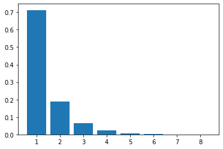
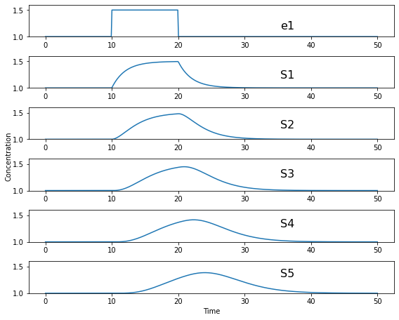

3. Quick Tour#
3.1. Biochemical systems#
A biochemical system is a series of linked chemical reactions, often enzyme catalyzed. For example:
\(S_1, S_2,\) and \(S_3\) are the names of the chemical species and \(v_1\) and \(v_2\) are the reaction rates. This reaction scheme describes the conversion of \(S_1\) to \(S_2\) and \(S_2\) to \(S_3\)
3.2. Describing a system as a mathematical model#
A biochemical system can be described using a series of differential equations. There will be one differential equation per chemical species.
The rate of change of a given species is governed by the rate at which the species is being made minus the rate at which it is being consumed:
How do we describe the ‘in’ and ‘out’ rates?
The simplest is to assume mass-action kinetics, where the rate is proportional to the concentration of species.
For example, consider \(S_1 \rightarrow S_2\) with a rate \(v\), then, using mass-action kinetics we can describe the rate as \(v = k_1 S_1\), where \(k_1\) is the rate constant.
3.3. Building a mathematical model#
A mathematical model for the system:
can be described using three differential equations:
Each differential equation describes a specific species. In this case there are three species, so there are three differential equations.
Each differential equation describes the difference between production and consumption rates for its assigned species.
For example, the differential equation for \(S_2\), has two terms, one term that describes the production rate, \(v_1\) and a second that describes the consumption rate \(v_2\).
Notice that the consumption rate is negative because \(S_2\) is being used up by \(v_2\).
The last differential equation only has one term \(v_2\). That’s because in the model, \(S_3\) is only being produced, it has no consumption step.
Notice also that the production rate, \(v_3\) is positive since \(S_3\) is being produced. Contrast this to the first differential equation for \(S_1\).
3.4. Adding rate laws to a mathematical model#
Now that we have the basic form for the differential equations, we need to assign mass-action rate laws to each of the reaction rates, \(v_1\), and \(v_2\). We can for example use the following:
These are irreversible mass-action rate laws because the value for the reaction rate, \(v_i\) can only be positive. These rate laws are independent of the concentration of product.
It would be more realistic to use reversible rate laws. For example, we could replace the first reaction with the reversible reaction:
the rate laws can be given by the more complicated expression:
Such a rate laws can be positive or negative depending on the relative concentration of reactant and product.
Using reversible rate laws we can write a more realistic mathematical model for our system as follows:
3.5. Running a simulation#
The differential equations in the last box can be solved on a computer when given values for the parameters and some initial conditions to \(S_1, S_2\) and \(S_3\).
The figure below was generate by the model shown in the Python code using the Tellurium package.
In the graph plots the concentrations of \(S_1, S_2\), and \(S_3\) versus time.
import tellurium as te
r = te.loada("""
S1 -> S2; k1*S1 - k2*S2
S2 -> S3; k3*S2 - k4*S3
k1 = 0.34; k2 = 0.23
k3 = 0.45; k4 = 0.23
S1 = 10
""")
r.simulate (0, 20, 100)
r.plot(xtitle='Time', ytitle='Concentration')
(Source code, png, hires.png, pdf)
{kind=link}
{kind=link}
The plot shows us an initial set of transients followed by a leveling off until all concentrations are no longer changing.
Using the same model as in the last box we can plot instead the two rates, $v_1$ and $v_2$. This plot is shown below:
import tellurium as te
r = te.loada("""
J1: S1 -> S2; k1*S1 - k2*S2
J2: S2 -> S3; k3*S2 - k4*S3
k1 = 0.34; k2 = 0.23
k3 = 0.45; k4 = 0.23
S1 = 10
""")
r.simulate (0, 20, 100, ['time', 'J1', 'J2'])
r.plot(xtitle='Time', ytitle='Concentration')
(Source code, png, hires.png, pdf)
{kind=link}
{kind=link}
As you can see it looks quite different. Both rates appear to go to zero.
What has happened is that the system has reached:
Thermodynamic equilibrium.
This state is characterized by unchanging concentrations and all reactions rate equal to zero. We can summarize it by:
3.6. The steady-state#
However, pathways inside cells are rarely if ever at thermodynamic equilibrium. Instead they are, what we call at:
centerline{bf Steady state.}
When we are at steady-state the concentrations are unchanging {bf but} but reaction rates are {bf not zero}:
In order to mimic a pathway inside a cell we must clamp (i.e fix) the boundaries of the pathway. In this case we would clamp \(S_1\) and \(S_3\) since the are the edges of the pathway. This will allow \(S_2\) to reach a steady-state.
import tellurium as te
r = te.loada("""
J1: $S1 -> S2; k1*S1 - k2*S2
J2: S2 -> $S3; k3*S2 - k4*S3
k1 = 0.34; k2 = 0.23
k3 = 0.45; k4 = 0.23
S1 = 10
""")
m = r.simulate (0, 20, 100, ['time', 'S1', 'S2', 'S3', 'J1', 'J2'])
r.plot(xtitle='Time', ytitle='Concentration')
(Source code, png, hires.png, pdf)
{kind=link}
{kind=link}
Notice that the two edge (or boundary species), \(S_1\) and \(S_3\), do not change because we fixed them in the simulation.
But most important, notice that the two rates \(v_1\) and \(v_2\) converge. That is, at steady-state:
This result applies no matter how long the pathway. At steady-state, with $n$ steps, it will be true that:
3.7. Calculating the steady-state#
In the last box we introduced the idea of the steady-state.
We can also compute the steady-state by setting the differential equations to zero and solving for the concentrations. For example, consider this problem:
In this example, $X_o$ and $X_1$ are {bf fixed species}, this is to allow \(S_1\) can reach a steady-state. Let’s also keep the reaction rate laws simple:
Because \(X_o\) and \(X_1\) are fixed, there is only one differential equation for the model:
We can set this to zero and solve for \(S_1\) which gives us:
This equation lets us compute the steady-state concentration of \(S_1\) without doing any simulation.
It also tells us something important, that the steady-state concentration of \(S_1\) depends on all three parameters of the system. Note it doesn’t include \(X_1\) because the rate \(v_2\) was irreversible.
For example, if we increase \(k_2\) the concentration of \(S_1\) will decrease.
3.8. Bigger pathways#
In the last box we saw that we could compute the steady-state levels of the chemical species by setting the differential equation to zero and solving for the species concentration.
Exactly the same thing can be done with pathways that have lots of chemical species. However, the algebra can be more difficult, and for larger systems we still use computer software to compute the steady-state.
However, the same conclusion applies which is that the steady-state concentrations will be a function of all the paymasters in the system.
3.9. Changes to the steady-state#
In Box 8, we saw that for a simple model, the steady-state concentration of a chemical species was a function of all the parameters of the system.
A common parameter in a real biochemical pathway is the concentration of enzyme at each reaction step.
We can change enzyme concentrations both in our computer models as well as in the wet lab and observe the effect on the pathway.
What kinds of things can we observe?
There are at least two:
The first we’ve already seen which are the concentrations of the various chemical species.
There is however a second thin we can observe which are the rates of the reactions. If we were to increase the level of a given enzyme then it is very likely that the steady-state reaction rate will go up.
Terminology:
we need to introduce a new term which is a special term used to indicate the steady-state rate. This term is called the flux and is often designated with the symbol \(J\)
3.10. Changing enzyme levels#
In the last box we said that we could observe how changing the level of a given enzyme can lead to changes in concentrations and fluxes.
An important question to ask is what influence do the different enzymes in a pathway have on the concentrations and fluxes?
This is the main question we will consider for the rest of the document.
3.11. Measuring influence#
In the last box we introduced the question as to what influence a given enzyme had on a pathway at steady-state.
To answer this question we need some way to {bf quantify influence}.
The most obvious way is to make a change in the concentration of a given enzyme and measure the corresponding steady-state change.
If we use the symbol \(\Delta\) to indicate change then we can make a change \(\Delta e\) in an enzyme and observe the corresponding steady-state \(\Delta\) change in a chemical concentration or a flux.
Better still, we can take the ratio of the \(\Delta\) changes:
We can do the same for flux:
It is important to emphasize that the change we are observing is the change in the steady-state level.
3.12. The problem of units#
In the last box we introduced the notion of a measure of influence as a ratio of $Delta$ changes. This idea has a couple of problems.
The first is related to units. Experimentalists have many ways for measuring changes in a cell and two research groups might use two completely different approaches to measure the same thing, resulting in measurements that use different units. This makes it difficult to compare across different research groups.
To avoid this issue we can eliminate units by dividing by the steady-state levels. For example, let’s say a pathway is at steady-state and a given chemical species, \(S\) is at steady-state and a given enzyme has a certain level, \(e\). We can write out a unit-less influence as follows:
The same can be done with the influence over a flux, \(J\):
This approach solves the units issue. There is still one more problem however.
3.13. The problem of the delta#
There is one more problem with our current measure of influence. Because biochemical systems are nonlinear, i.e they don’t usually respond in a linear way, the measure of influence will depend on the size of the \(\Delta\) we make.
The way to get around this issue to make only small changes. Instead of using the symbol $Delta$, we will switch to the symbol \(\delta\), to indicate a small change.
Small changes can be made smaller and smaller, in fact so small that they can become, at least mathematically, infinitesimal. This moves us into the realm of calculus. Let’s follow this approach and define our influence as:
The same can be done with the influence over a flux, \(J\):
These influence measures have formal names:
3.14. A real example#
Here is a real example where some researchers built a large computer model of metabolism in {em E.~coli}.
The following is a heat-map for all the flux control coefficients in a large {em E.~coli} model.
Red indicates that the enzyme has a lot of influence over a flux. Note that some are blue, these are negative coefficients, these indicating that an increase in enzyme level will decrease the flux, a negative influence if you like.
The flux is indicated by the row and the enzyme to change is on the column (heat-map computed by Tellurium).
{kind=link}
Model from:
3.15. Looking at a simpler example#
Let’s look more closely at the control coefficients by looking at a simple linear chain of enzymes.
We’ll generate 200 random linear chain models where each model contains eight enzymatic steps. The parameters values in the each model are randomly generated. We will compute the flux control coefficients for each step in each model and then calculate the average flux control coefficient for each step.
This is what a single model looks like:
The following is a bar graph that indicates the value for the average control coefficient at each step (\(x\) axis) starting at the first step, marked with a one.
{kind=link}
We immediately see a pattern. Even though the kinetic parameters are random, we can clearly see that the first few steps have more influence than the steps further down the chain.
Why is this?
3.16. Summation of Control Coefficients#
Before answering the question posed in the last box there is one interesting observation we can make about the control coefficients.
If you look at the distribution of flux control coefficients in the bar chart in the previous box, you may notice that the heights of the bars appear to add to one. This is no coincidence.
This is in fact a genial result that applies to any pathway which we summarise below:
The sum of all the flux control coefficients is one
A parallel summation law also applies to the concentration control coefficients which sum to zero:
Both summations are over all enzymatic steps in the pathway.
3.17. What happens when we change an enzyme?#
In order to explain the results we got in the last box, we need to introduce a new concept.
When we increase the amount of enzyme, this causes the reaction rate for that step to increase. This in turn cases downstream and upstream steps to respond as the disturbance ripples out from the source.
The following figure shows what happens in a six step linear pathway when we apply a pulse to the first enzyme In this case, we increase the enzyme by 50%, wait 10 time units then bring the enzyme back to it original value.
{kind=link}
Each panel show the effect of the pulse on \(S_1\), \(S_2\) etc. You can see that the pulse travels downstream as the disturbance ripples out.
3.18. How do disturbances spread out?#
In the last box we saw how a disturbance in enzyme \(e_1\), moved downstream. What causes this to happen and is there a way to quantify it?
Imagine changing \(e_1\), this causes \(v_1\) to increase. This in turn causes \(S_1\) to increase which causes \(v_2\) to increase. This causes \(S_2\) to increase. This continues down the chain until we reach the end at the fixed species \(X_1\).
The key unraveling this, is understanding how a species such as \(S_1\) causes the next rate, \(v_2\) to change. One way to look at this is to use the derivative, \(\partial v_2/\partial S_1\). This tells us how \(S_1\) affects the rate \(v_1\). However, just like the arguments we used with the control coefficients, it would be worthwhile eliminating the units, so let’s do that:
This is called the {bf elasticity coefficient} and is given the symbol \(\varepsilon\). We would write it like this:
Often we will drop the v and the s in the superscript and subscript to just leave the numbers: \(\varepsilon^2_1\)
Another way to look at this is to rearrange the elasticity expression like this:
This tells use that a change in \(S_2\) causes a change in \(v_2\). This is in fact the clue we need to understand how disturbances move along a pathway.
3.19. Dealing with multiple changes#
medskip Because we are dealing with infinitesimal changes, if there are other changes associated with \(v_2\), all we have to do is add them together to get the overall change.
For example, if both \(S_1\) and \(S_2\) change, which is what will happen in a real pathway, we can get the overall change in rate using:
In this case we are using two elasticities, one for \(S_1\) and the other for \(S_2\).
A disturbance travels along a pathway by jumping from elasticity to elasticity. The values for the elasticities determine how much of the disturbance moves from one step to the next.
We can now say that if a given step has a high flux control coefficient, this must mean that the disturbance finds it easy to travel out, suggesting that there is a favourable set of elasticities to transmit the disturbance.
3.20. Perturbations at the first and last step#
The figure below shows the path that a perturbation takes when we change \(e_1\), and the elasticities that transmit the perturbation from step to step.
{kind=link}
In contrast, the next figure shows what happens when a perturbation is made to the last step, in this case the disturbance is transmitted up stream:
{kind=link}
The major question we want to ask is why are flux control coefficients smaller on the downstream steps compared to the steps near the front?
A more detailed analysis shows that the flux control coefficient \(C^J_{e_1}\) is proportional to the product of the reactant elasticities:
while the last flux control coefficient is proportional to the product elasticities:
So what’s so special about the reactant and product elastcities?
3.21. Reactant and product elasticities#
Let’s derive the reactant and product elasticities for a simple reversible mass-action reaction:
where \(S\) is the reactant and \(P\) the product. We can derive the elasticities by differentiating the expression and applying the necessary scaling. Recall that the elasticities for the substrate and product are given by:
Applying these formula to the rate laws yields the following elasticity terms:
Two things to note. The first is that \(\varepsilon^{v}_{S}\) is {bf positive} and \(\varepsilon^{v}_{P}\) is negative. This is what we’d expect. The second thing to note is that the sum of the two elasticities is one:
Since \(\varepsilon^{v}_{P}\) is negative then is must be true that:
where {tt abs} means the absolute value. This tells us that substrates have more influence over the reaction rate than products.
This is significant because it means that since downstream perturbations depend on the reactant elasticities, it is far easier for a perturbation to travel downstream than it is to travel upstream. This explains why flux control coefficients tend to be high near the start of a pathway compared to those near the end.
3.22. Summary#
Before we leave simple linear chains of reactions, let’s summarise the overall conclusion and what it implies for metabolic engineers and those looking for suitable drug targets to act on.
Let’s say we have a linear pathway where we know very little if anything about the properties of the enzymes but you do know there is no negative feedback regulation.
Then, on average, {bf the sites that are most likely to influence the pathway flux are the two first steps of the pathway.}
If you are a metabolic engineer or a pharmaceutical researcher looking for a target, you should target the first two steps of the pathway.
3.23. Effect of negative feedback#
The final thing to cover is to ask what happens where there is a negative feedback loop in the pathway, such as the one shown below:
{kind=link}
As we’ve seen, for pathways without negative feedback, the flux control coefficients tend to concentrate in the upper portion of the pathway.
In complete contrast, for pathways with negative feedback loops, flux control shift downstream to just beyond the signal species (\(S_3\) in the figure). To show this is the case, 200 models with random parameters that include a negative feedback loop were simulated and the flux control coefficients averaged. As before we have 8 enzyme catalyzed steps. The results are shown in the histogram plot below. It should be clear that the flux control has shifted from the first two steps to the last step. There is still a residual of influence in the first step but 70% of the control has shifted downstream.
{kind=link}
The reason for this is that the negative feedback loop resists any changes made upstream of the signal species \(S_4\) and it enhances the ability of the last step to influence the flux. end{mybox}
3.24. Summary of the effect of negative feedback#
To summarise:
In contrast to unregulated pathways, for metabolic engineers or those researchers looking for suitable drug targets to act on, should preferentially target those steps downstream of the signal.